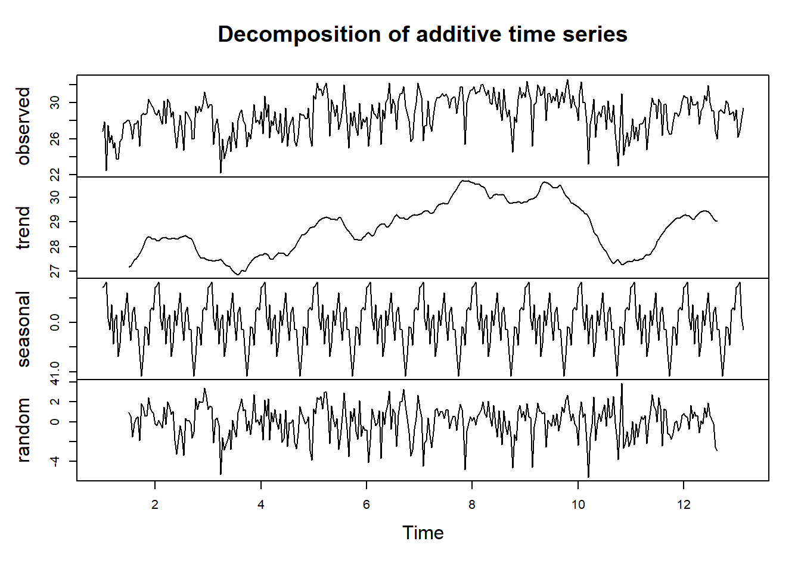

Capítulo 3 Preprocesamiento y visualización
Parte de las visualizaciones para el conjunto de datos analizados se desarrollaron en el capítulo 02 al crear las series de tiempo (2.3) y especialmente en el análisis exploratorio de datos / EDA (2.5), por lo que para este capítulo se presentan las medias móviles, la descomposición de las series y los rezagos.
Con el Conjunto de datos cargados y procesados en el capítulo 2, se procede con los análisis adicionales del presente capítulo.
## BOG MED VUP
## 2018-01-01 NA 26.3 34.2
## 2018-01-02 NA 25.6 32.3
## 2018-01-03 NA 28.7 33.5
## 2018-01-04 NA 27.4 33.4
## 2018-01-05 NA 25.8 32.8
## 2018-01-06 NA 28.0 34.2## BOG MED VUP
## 2018-01-01 13.8 0.012 0.00
## 2018-01-02 0.1 26.304 27.97
## 2018-01-03 2.2 4.774 1.15
## 2018-01-04 0.0 7.233 0.00
## 2018-01-05 17.1 3.169 13.21
## 2018-01-06 0.3 4.862 0.013.1 Medias móviles
Se inicia graficando las medias móviles semanales y mensuales para las series de temperatura para las tres ciudades analizadas en el estudio:
# Serie original
plot(df_temp_max_ts,
main='Temperatura máxima diaria',
xlab='Fecha', ylab='Temperatura [°C]',
col=c("lightblue", "lightgreen", "orange"))
legend("right", ,
col = c("lightblue", "lightgreen", "orange"),
lty = 1, lwd = 1,
legend = c("BOG", "MED", "VUP"))En las gráficas anteriores se aprecian las series de tiempo original de temperatura máxima diaria, con las medias móviles semanales en azul oscuro y la mensual en rojo. A pesar de los datos faltantes (posiblemente por pandemia), las medias móviles se calculan y grafican para las tres ciudades en los años iniciales y continuan solamente para Medellín (línea verde claro) y aunque no se nota casi para Valledupar también (línea naranja). Bogotá al contar con la mayor cantidad de datos faltantes no se calcula, ni grafica después de retomarse las mediciones en el año 2023.
Ahora se procede con las medias móviles semanales y mensuales de los datos de precipitación:
# Serie original
plot(df_rain_ts,
main='Precipitación total diaria',
xlab='Fecha', ylab='Lluvia [mm]',
col=c("lightblue", "lightgreen", "orange"))
legend("bottom",
legend = c("BOG", "MED", "VUP"))Las medias móviles semanales y mensuales de las series de precipitación se calculan y grafican sin problema, aunque al ser tan cercanas, no alcanzan a diferenciarse, es notorio el salto en marzo 2022 por las lluvias superiores a 700 mm en Valledupar.
3.2 Descomposición
En vista de los Datos faltantes en los datasets, especialmente para los registros de temperatura, se procede a realizar la descomposición para el 2022 de precipitación en Bogotá y el 2023 de temperatura en Medellín.
# Precipitación total diaria Bogotá 2022
BOG_rain_2022 <- df_rain_ts["2022", "BOG"]
head(BOG_rain_2022)## BOG
## 2022-01-01 0.0
## 2022-01-02 0.0
## 2022-01-03 0.0
## 2022-01-04 0.6
## 2022-01-05 0.0
## 2022-01-06 0.0## BOG
## 2022-12-26 0.2
## 2022-12-27 0.0
## 2022-12-28 0.1
## 2022-12-29 0.1
## 2022-12-30 0.2
## 2022-12-31 0.3## BOG
## 0# Temperatura máxima diaria Medellín 2023
MED_temp_2023 <- df_temp_max_ts["2023", "MED"]
head(MED_temp_2023)## MED
## 2023-01-01 26.8
## 2023-01-02 27.9
## 2023-01-03 22.5
## 2023-01-04 27.5
## 2023-01-05 25.6
## 2023-01-06 26.4## MED
## 2023-12-26 28.0
## 2023-12-27 29.2
## 2023-12-28 26.2
## 2023-12-29 26.9
## 2023-12-30 28.2
## 2023-12-31 29.4## MED
## 0Se procede a realizar la descomposición en las series con frecuencias mensuales (30 días), tanto para la lluvia en Bogotá y la temperatura en Medellín.
De la gráfica de tendencia se aprecia claramente que los mayores registros de precipitación se encuentran entre marzo y mayo (meses 3 y 5) y nuevamente se presentan altas lluvias entre septiembre y noviembre (meses 9-11), lo cual evidencia como en todo el país un ciclo de lluvias bimodal.
# Decompose temperatura
attr(MED_temp_2023, 'frequency') <- 30
plot(decompose(as.ts(MED_temp_2023)))
Como se puede apreciar en las gráficas anteriores para la temperatura, se obtienen los mismos resultados usando decompose y plot y stl y autplot. En Medellín, las mayores temperaturas se presentan en los meses de mitad de año (lo meses que seguramente llueven menos), especialmente en agosto (mes 8).
Las tendencias mensuales anteriores encontradas por descomposición corresponden a identificado por el (IDEAM - Instituto de Hidrología, Meteorología y Estudios Ambientales 2012) para las características climatológicas de ciudades principales y municipios turísticos como Bogotá y Medellín.
3.3 Dickey-Fuller Test
Se aplica la función adf.test para verificar si las series seleccionadas son estacionarias:
##
## Augmented Dickey-Fuller Test
##
## data: as.ts(BOG_rain_2022)
## Dickey-Fuller = -5.0401, Lag order = 7, p-value = 0.01
## alternative hypothesis: stationary##
## Augmented Dickey-Fuller Test
##
## data: as.ts(MED_temp_2023)
## Dickey-Fuller = -4.2854, Lag order = 7, p-value = 0.01
## alternative hypothesis: stationaryTal como se ve en el material de la Unidad 3, si el valor \(p\) es menor que \(0.05\) las series son estacionarias, en este caso evidentemente, la lluvia y temperatura diaria son estacionarias. Pensando en un nivel de significancia del \(5\%\)
De todos modos se verifica con ndiffs:
## [1] 0## [1] 1Encontramos que ndiffs nos da \(1\) para la serie de temperatura en Medellín por lo que aplicamos diff:
MED_temp_2023_diff <- diff(as.ts(MED_temp_2023))
plot(MED_temp_2023_diff,
main="Diferencia de temperatura máxima diaria en Medellín 2023",
ylab="Diferencia de temperatura", xlab="Tiempo",
col="lightgreen")Volvemos a verificar con adf
## Warning in adf.test(MED_temp_2023_diff): p-value smaller than printed p-value##
## Augmented Dickey-Fuller Test
##
## data: MED_temp_2023_diff
## Dickey-Fuller = -10.091, Lag order = 7, p-value = 0.01
## alternative hypothesis: stationary